Overview
I purchased Barenbrug Turf Saver RTF tall fescue grass seed from the eBay seller nanostromer in July 2026. After planting it, I did not observe the germination I expected. I had planted other grass seed in a nearby area under substantially similar conditions, and that seed germinated successfully.
I contacted nanostromer to report the problem and ask for help. The exchange that followed involved questions about planting conditions, requests for photographs, discussion of a refund or replacement, and repeated requests from me for the eBay feedback-revision link.
The purpose of this page is to document that exchange. The screenshots below are the primary evidence, and readers can review them and reach their own conclusions.
I was frustrated and some of my early messages were unnecessarily harsh. I have intentionally included those messages rather than editing them out, because I want the record to show the conversation as it actually occurred.
The Facts
Timeline
Initial shipping inquiry
I asked why the item appeared to be shipping from China. The seller responded that it shipped from a warehouse in the United States and described the expected processing and shipping time.
Germination concern reported
I told the seller that I had not observed germination and compared the result with another seed planted nearby.
Photos and follow-up
I sent a photo of the seed bag. The seller stated that the details had been registered and that a solution was expected within 24 hours.
Additional questions
The seller discussed possible causes including temperature, moisture, planting depth, storage, and seed-batch differences, and requested further information and comparison photographs.
Refund or replacement discussion
The seller stated that a refund or replacement was possible, later discussed a return or partial refund, and I continued asking for the eBay feedback-revision link.
Original Message Screenshots
The screenshots below are presented in chronological order and are the core documentation for this page. Click any image to enlarge it.
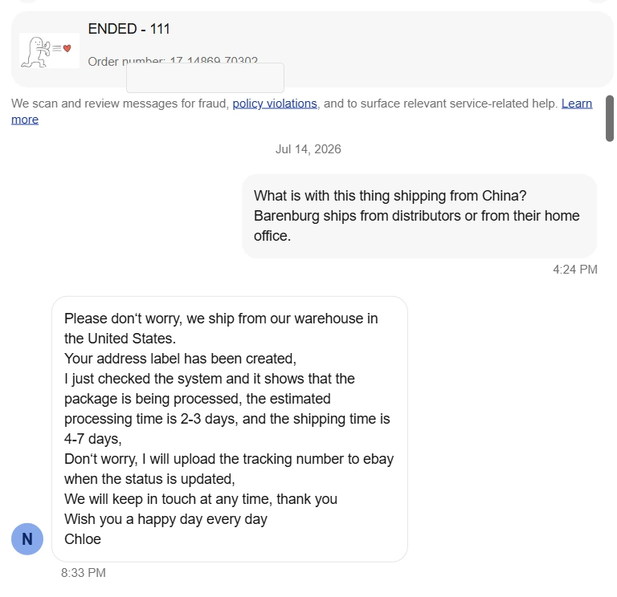
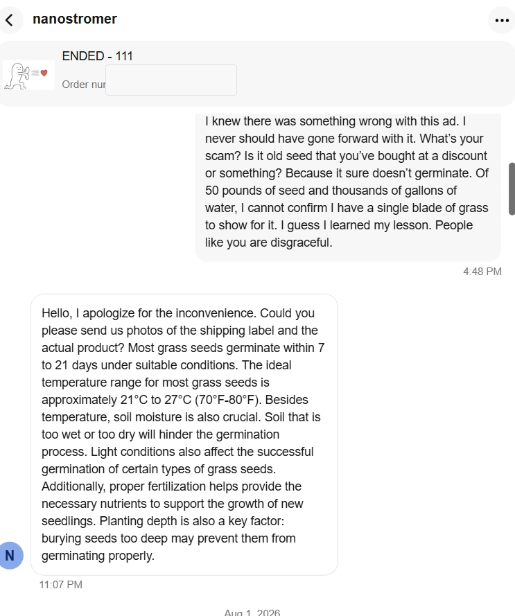
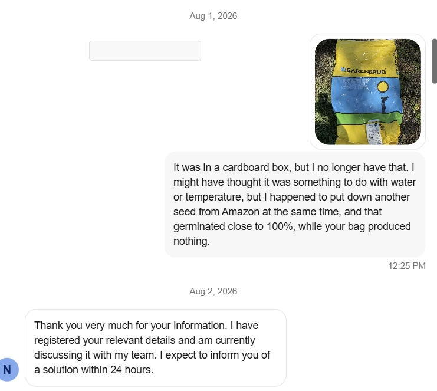
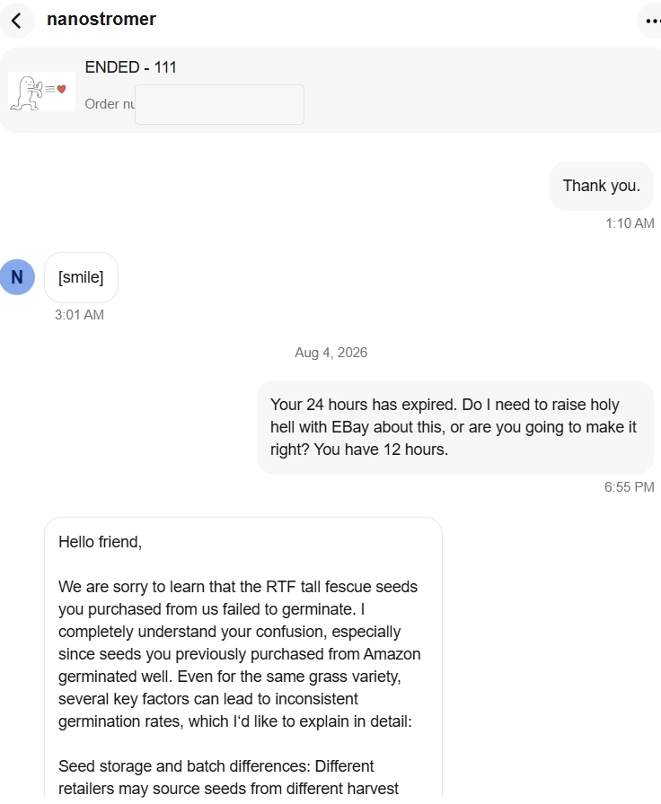
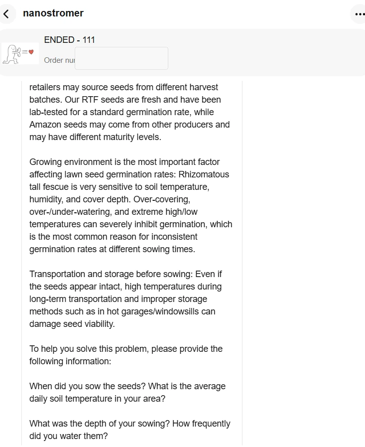
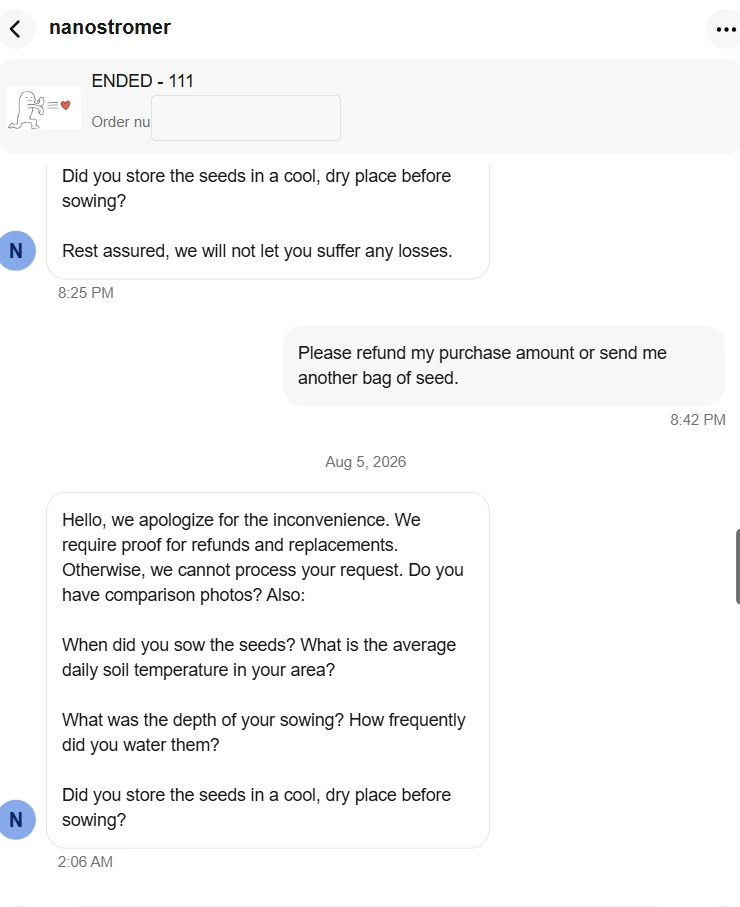
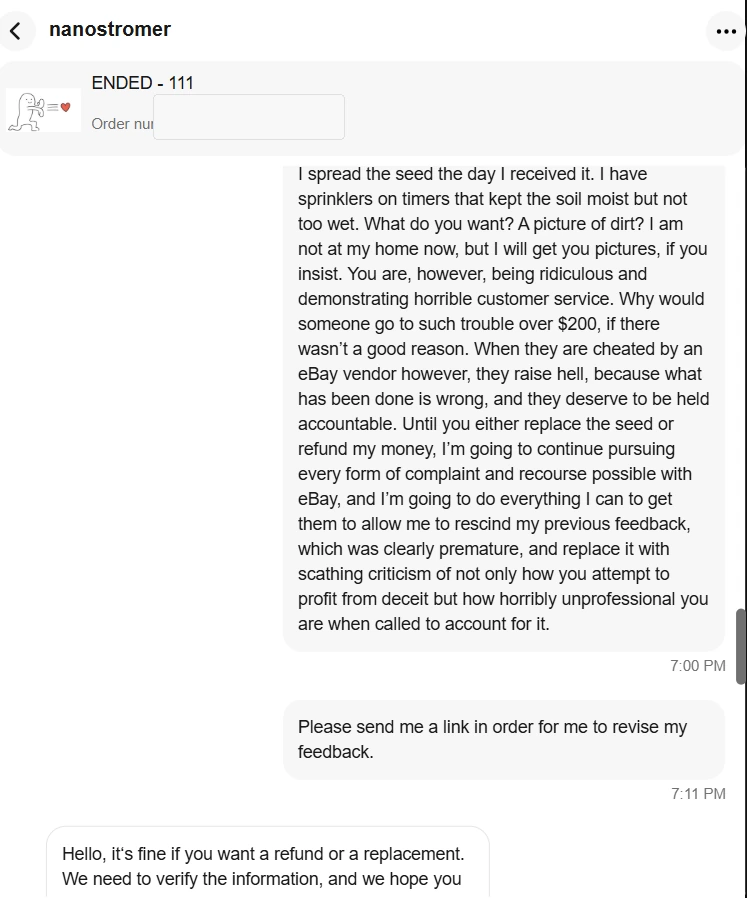
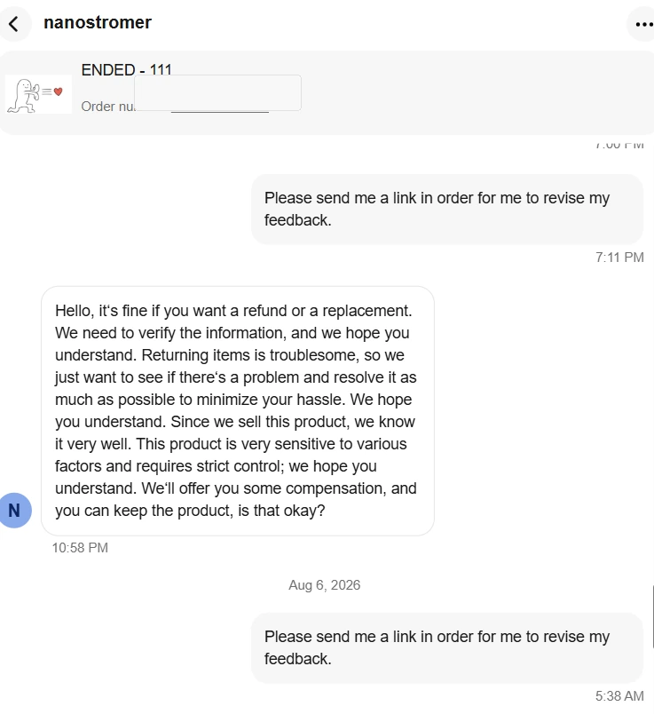
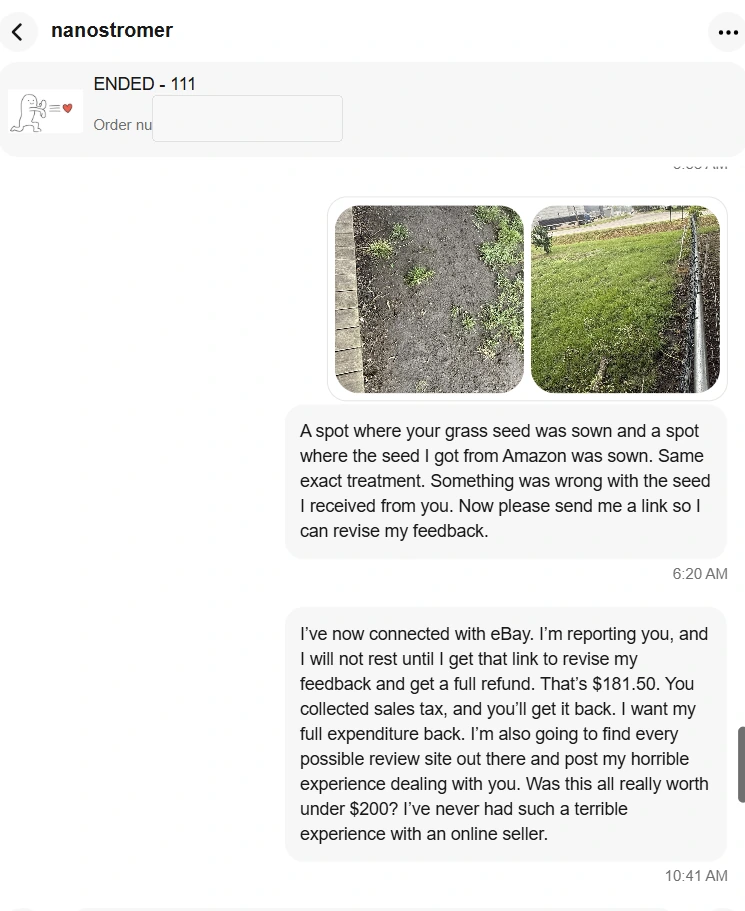
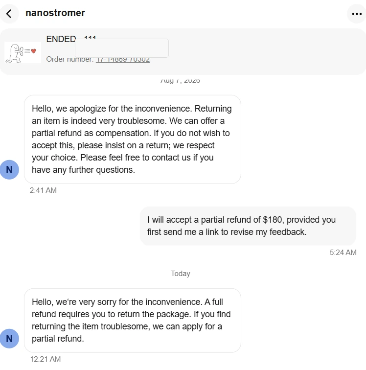
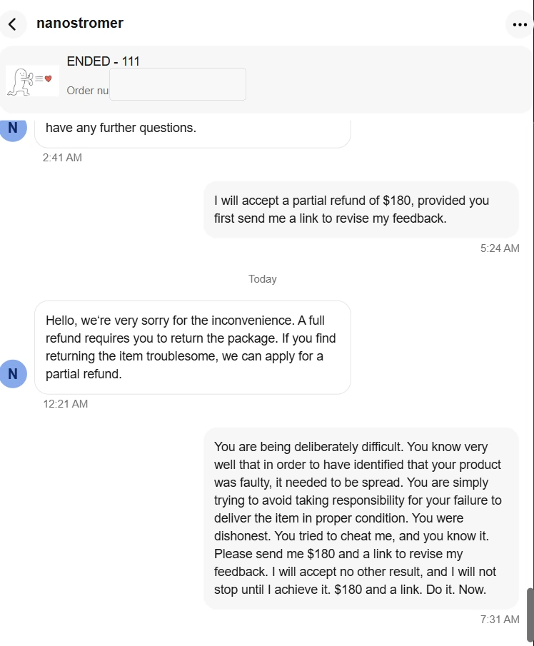
Conclusion
Products sometimes fail, and buyers and sellers can reasonably disagree about why. My dissatisfaction ultimately came less from the possibility that the product did not perform as expected than from my overall customer-service experience and the difficulty I experienced trying to reach a resolution.
I requested the eBay feedback-revision link multiple times during the exchange. The screenshots above show those requests and the responses I received. I have chosen to present the communications themselves rather than characterize the seller's motives.
This page reflects one customer's experience. Readers can review the original messages and make their own judgment.
Updates
No later resolution has been added to this page. If the matter is resolved or materially changes, this section can be updated to keep the record accurate.